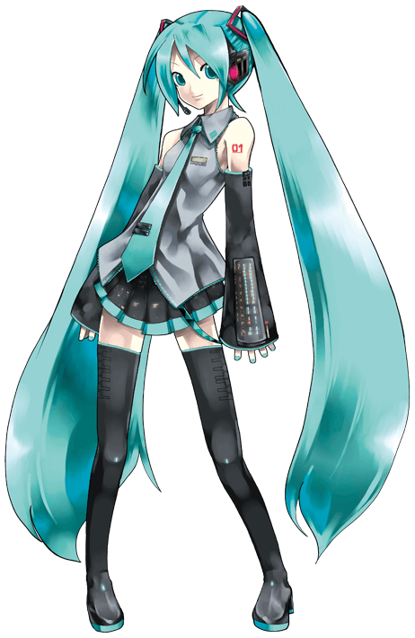

WHO IS HATSUNE MIKU?
She is a singing voice synthesizer featured in over 100,000 songs released worldwide.
Hatsune Miku means "The first Sound from the Future".
PROFILE
Age: 16
Height: 5 ft 2 in
Weight: 93 lbs
Birthday: 8.31
Color: Turquoise
Item: Leek
Voice provider: Fujita Saki

APPEARANCE
Hatsune Miku dons her signature turquoise twin tails, held in place by hot pink and black squared-shaped futuristic ribbons. On her ears lie a pair of black headphones that light up a hot pink color. Her futuristic outfit resembles a school uniform. She wears a sleeveless collared gray shirt and turquoise tie, a dark gray skirt with a triangle-patterned strap hanging at her left side, and dark gray thigh high boots. Her arms are mostly hidden by her dark gray arm warmers, only showing the tips of her fingers and her shoulders. On her left shoulder is a '01' tattoo. Her design is mostly inspired by Yamaha synthesizers and keyboards.